Từng bước tạo bot Zalo chạy 24/7
Bạn chọn bài ở mục lục rồi thao tác theo từng bước trên web. Chỉ copy câu lệnh khi bước ghi Gửi cho AI. Mỗi bài có kết quả để bạn tự kiểm.
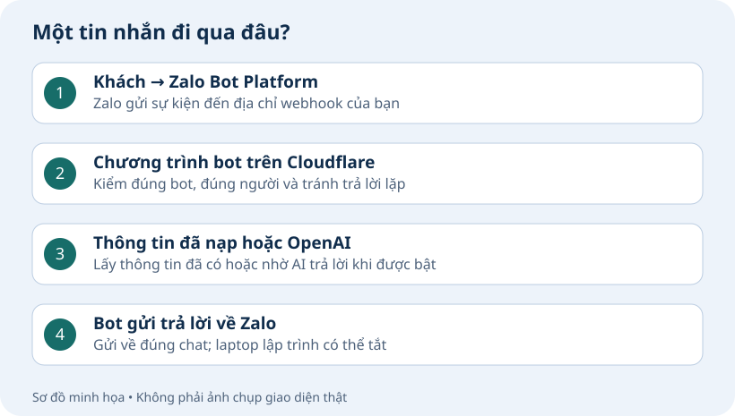
| Bài | Bạn sẽ có gì? |
|---|---|
| 0. Cài bộ học | AI mở được chương trình bot, file hướng dẫn riêng và bộ chỉ dẫn. |
| 1. Xác định cách dùng bot | AI ghi đúng nhu cầu và hướng dẫn bạn sang Bài 2. |
| 2. Tạo bot Zalo của bạn | Bạn thấy bot mới trong Zalo và đã cất riêng khóa Bot Token. |
| 3. Cho bot trả lời khi máy tính tắt | Bot trả lời một câu có sẵn trên Zalo, kể cả khi máy tính cài bot đã tắt. |
| 4. Bật AI và theo dõi chi phí | Bot trả lời đúng câu thử và bạn biết nơi xem phí sử dụng OpenAI. |
| 5. Cho bot nhớ cuộc trò chuyện | Lựa chọn lưu hội thoại được ghi nhận. Nếu bật, bot trả lời được câu hỏi dựa trên tin vừa gửi. |
| 6. Quyền, nhóm và đọc ảnh | Bạn có quyền quản lý và bot đọc được ảnh gửi trong chat riêng. Nếu dùng nhóm, bot trả lời khi bạn gọi @bot trong nhóm đã bật. |
| 7. Thêm thông tin riêng cho bot | Bot trả lời được theo tài liệu bạn đã nạp. Bạn đã báo kết quả cho AI; đổi cách xưng hô là phần tùy chọn. |
| 8. Hỏi bot về tài liệu, tin thoại và video | Bot trả lời câu hỏi về các loại tài liệu, tin thoại hoặc video bạn đã chọn ngay trong chat riêng trên Zalo. |
| 9. Đặt lịch nhắc và giữ bản sao dữ liệu | Bot nhắc đúng hẹn. Bạn tải được file sao lưu, kiểm thấy Bản sao hợp lệ và biết cách khôi phục khi cần. |
| 10. Quản lý và cập nhật bot | Bạn biết AI đang bật ở đâu, dùng lệnh bật/tắt và biết phần nào đã làm xong. |
Chức năng và giới hạn hiện tại
| Đã thử trên bot mẫu | Giới hạn cần biết |
|---|---|
| Chat AI, kho sản phẩm, quản lý kho và nhóm gọi bằng @ | Chủ bật từng nhóm; quyền sửa kho trong chat riêng. |
| Ảnh riêng, tin thoại riêng, PDF/Word/âm thanh/video qua trang tải | Ảnh/file theo giới hạn từng bài; video tối đa 15 phút; bot xem ảnh chụp từ video và lời thoại đọc được, có thể bỏ sót cảnh ngắn. |
| Thông tin đã nạp, ảnh/link gửi lại, lịch nhắc và tải bản sao mã hóa | Bạn kiểm và duyệt tài liệu trước khi bot dùng. Bản sao gồm dữ liệu đã ghi nhận và ảnh gốc đã nạp; khôi phục vào nơi lưu mới, bạn xác nhận mới chuyển. |
| Ảnh nhóm và đọc tin trích dẫn tự động | Zalo yêu cầu @bot trong nhóm nhưng giao diện chưa cho @ trực tiếp trong tin ảnh. Bot chưa nhận được nội dung của tin được trích dẫn để đọc. Ảnh PNG/JPEG gửi chat riêng. Trang /tep dành cho tài liệu, âm thanh và video ở Bài 8. |
Cài bộ học bot Zalo 24/7
Bạn đã mở được AI và kiểm Node/Git ở trang chuẩn bị. Bây giờ nhận mã nền, đặt file riêng và để AI cài skill.
Bài này cho bạn cái gì?
Một thư mục bot-zalo-24h có đủ chương trình, file hướng dẫn riêng và bộ chỉ dẫn để AI làm đúng từng bài. Bot chưa chạy ở bước này; triển khai Cloudflare nằm ở Bài 3.
Tải mã và đặt file riêng
Tải ZIP mã nền. Giải nén ZIP: bên trong chỉ có một thư mục bot-zalo-24h. Với một bộ bot mới, đặt ở nơi mới trống, ví dụ Documents/bot-thu-moi/bot-zalo-24h; không giải nén đè bộ đã cài. Tiếp tục bộ đang làm thì mở đúng thư mục cũ, không giải nén lại. Giữ thư mục ở nơi dễ tìm; không để các file mã rải rác trong Downloads.
Nhận đúng một file KHOI-TAO-BOT.md từ anh Lộc. File này được gửi riêng, không có nút tải công khai trên website.
Đặt file vào trong bot-zalo-24h, cùng nơi có README.md, AGENTS.md và package.json; không đặt vào thư mục src.
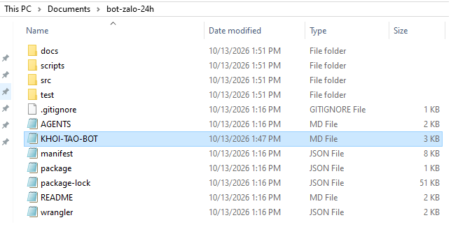
Nếu chưa có file riêng, liên hệ người hướng dẫn. Đừng dùng file của khách khác hoặc đưa khóa thật vào file.
Dấu hiệu đạt
Đã giải nén đúng thư mục và đặt file khởi tạo nhận riêng.
Đọc KHOI-TAO-BOT.md và tiến độ. Tôi đang làm Bài 0 · Cài bộ học, phần “Tải mã và đặt file riêng”. Kết quả tôi gặp: [dán câu báo lỗi hoặc mô tả tại đây]. Hãy kiểm nguyên nhân, giữ dữ liệu đang có và chỉ tôi bước cần làm tiếp. Không yêu cầu tôi gửi khóa hoặc mật khẩu.Mở dự án và cài skill cho AI
Chọn công cụ bạn đã cài: Codex → tên dự án phía trên ô nhắn → New project; Claude → Code → Local → Select folder; Antigravity → Projects → New Project/Add Folder. Chọn thư mục bot-zalo-24h vừa giải nén, không chọn ZIP hoặc src. Ảnh các nút đã có ở trang chuẩn bị.
Mở dự án bot-zalo-24h trong AI đã chọn, rồi gửi câu dưới đây. AI tự tải và đặt bộ chỉ dẫn (skill) vào đúng chỗ.
Cài trong một lượt
Tải skill hoc-bot-zalo-24-7 từ downloads/skill-hoc-bot-zalo-24-7.zip vào dự án bot-zalo-24h đang mở. Đọc và kiểm bộ skill, tự chọn nơi cài phù hợp với AI hiện tại, giữ nguyên skill khác. Báo đường dẫn đã cài; thiếu file hoặc quyền thì báo rõ. Chỉ cài bộ chỉ dẫn, chưa cho bot chạy hoặc dùng OpenAI để trả lời tin.AI báo đã cài xong thì làm bước xác nhận dưới đây. Nếu AI yêu cầu mở cuộc chat mới để nhận skill, mở chat mới trong cùng dự án.
Dấu hiệu đã sẵn sàng
Tên dự án đang mở phải là bot-zalo-24h. Gửi câu xác nhận này; AI phải chỉ ra đúng các file thật đã đọc.
Hãy xác nhận công cụ AI hiện tại nhận diện được skill hoc-bot-zalo-24-7 trong dự án bot-zalo-24h. Đọc trọn SKILL.md, KHOI-TAO-BOT.md, README.md và package.json; liệt kê đường dẫn đầy đủ thật đã đọc. Nếu thiếu file hoặc chưa nhận diện skill thì báo rõ. Chỉ kiểm các file, chưa cài bot hoặc dùng OpenAI để trả lời tin.Xong khi: AI nhận diện skill và liệt kê đủ bốn file trên. Tiếp tục Bài 1.
Dấu hiệu đạt
AI nhận diện bộ chỉ dẫn và đọc đủ các file cần thiết.
Đọc KHOI-TAO-BOT.md và tiến độ. Tôi đang làm Bài 0 · Cài bộ học, phần “Mở dự án và cài skill cho AI”. Kết quả tôi gặp: [dán câu báo lỗi hoặc mô tả tại đây]. Hãy kiểm nguyên nhân, giữ dữ liệu đang có và chỉ tôi bước cần làm tiếp. Không yêu cầu tôi gửi khóa hoặc mật khẩu.Xác định cách dùng bot
Nói bot dùng cho việc gì, ai dùng và ai quản lý.
Bài này cho bạn cái gì?
AI ghi đúng nhu cầu và hướng dẫn bạn sang Bài 2.
Chuẩn bị thông tin cho hồ sơ bot
Mở dự án bot-zalo-24h đã chuẩn bị ở Bài 0.
Chuẩn bị mục đích bot, người dùng và giọng trả lời. Bot có thể dùng cho cá nhân, học tập, giải trí, nội bộ hoặc bán hàng; không bắt buộc có kho sản phẩm.
Dữ liệu riêng là tùy chọn: thông tin dạng chữ, ghi chú, sản phẩm, tài liệu, file hoặc link. Chưa có thì nói ‘Chưa có’; vẫn tiếp tục cài bot. Nếu có, ghi rõ muốn bot dùng nguồn đó để làm gì; phần nạp dữ liệu sẽ thực hiện ở bài phù hợp.
Ở Bài 1, chọn nhu cầu dùng nhóm. Bài 6 bật đọc ảnh chat riêng và hướng dẫn thử ảnh.
Dấu hiệu đạt
Bạn đã xác định mục đích, người dùng và giọng trả lời mong muốn.
Đọc KHOI-TAO-BOT.md và tiến độ. Tôi đang làm Bài 1 · Xác định cách dùng bot, phần “Chuẩn bị thông tin cho hồ sơ bot”. Kết quả tôi gặp: [dán câu báo lỗi hoặc mô tả tại đây]. Hãy kiểm nguyên nhân, giữ dữ liệu đang có và chỉ tôi bước cần làm tiếp. Không yêu cầu tôi gửi khóa hoặc mật khẩu.AI tạo hồ sơ bot
Đọc KHOI-TAO-BOT.md và tiến độ. Làm Bài 1: hỏi tôi các thông tin hồ sơ còn thiếu, ghi hồ sơ và báo bước tiếp theo.Dấu hiệu đạt
AI đã ghi hồ sơ; thông tin còn thiếu được hỏi rõ.
Đọc KHOI-TAO-BOT.md và tiến độ. Tôi đang làm Bài 1 · Xác định cách dùng bot, phần “AI tạo hồ sơ bot”. Kết quả tôi gặp: [dán câu báo lỗi hoặc mô tả tại đây]. Hãy kiểm nguyên nhân, giữ dữ liệu đang có và chỉ tôi bước cần làm tiếp. Không yêu cầu tôi gửi khóa hoặc mật khẩu.Đọc hồ sơ trước khi sang bài 2
Mở hồ sơ AI vừa tạo; kiểm mục đích, người quản lý và chức năng được chọn.
Kiểm hồ sơ và báo AI sửa những thông tin chưa đúng.
Sang Bài 2 khi hồ sơ đã đủ thông tin.
Dấu hiệu đạt
Bạn đã kiểm hồ sơ và sửa những chỗ chưa đúng.
Đọc KHOI-TAO-BOT.md và tiến độ. Tôi đang làm Bài 1 · Xác định cách dùng bot, phần “Đọc hồ sơ trước khi sang bài 2”. Kết quả tôi gặp: [dán câu báo lỗi hoặc mô tả tại đây]. Hãy kiểm nguyên nhân, giữ dữ liệu đang có và chỉ tôi bước cần làm tiếp. Không yêu cầu tôi gửi khóa hoặc mật khẩu.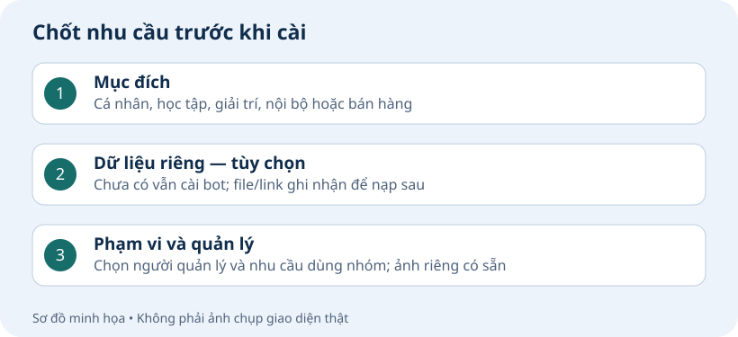
Dấu hiệu đã xong
AI ghi đúng nhu cầu và hướng dẫn bạn sang Bài 2.
Nếu chưa đạt, báo tên bước và thông báo lỗi đã che khóa cho AI.
Tạo bot Zalo của bạn
Tạo tên bot và giữ khóa để kết nối ở Bài 3.
Bài này cho bạn cái gì?
Bạn thấy bot mới trong Zalo và đã cất riêng khóa Bot Token.
Mở Zalo Bot Creator trên điện thoại
Mở Zalo và đăng nhập tài khoản sẽ sở hữu bot.
Bấm ô tìm kiếm trong Zalo → chọn Khám phá → nhập Zalo Bot Manager, rồi mở đúng Official Account (OA) như ảnh.
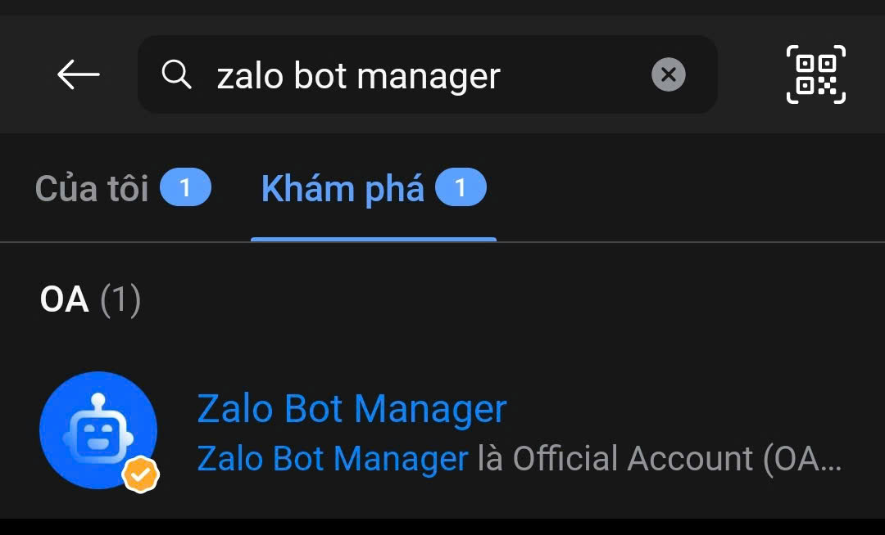
Nếu hiện nút Quan tâm, bấm Quan tâm để mở menu chat.
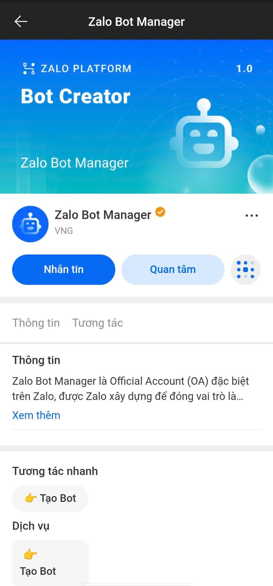
Trong menu cửa sổ chat, bấm Tạo Bot để mở Zalo Bot Creator.
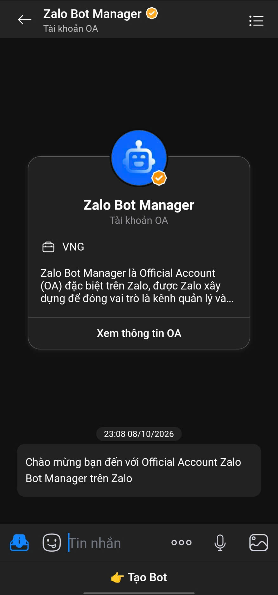
Dấu hiệu đạt
Bạn đã mở được Bot Creator bằng tài khoản của mình.
Đọc KHOI-TAO-BOT.md và tiến độ. Tôi đang làm Bài 2 · Tạo bot Zalo của bạn, phần “Mở Zalo Bot Creator trên điện thoại”. Kết quả tôi gặp: [dán câu báo lỗi hoặc mô tả tại đây]. Hãy kiểm nguyên nhân, giữ dữ liệu đang có và chỉ tôi bước cần làm tiếp. Không yêu cầu tôi gửi khóa hoặc mật khẩu.Tạo bot của bạn
Trong Bot Creator, bấm Tạo tài khoản Zalo Bot để tạo bot mới riêng cho bộ này. Nếu đang tiếp tục một bộ đã bắt đầu, chỉ mở lại đúng bot của bộ đó; không dùng bot đang phục vụ của bộ khác.
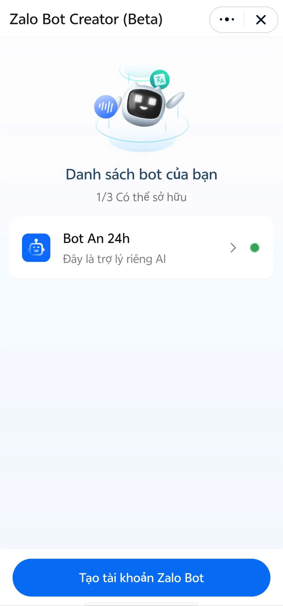
Nhập tên bắt đầu bằng Bot, tối thiểu 10 ký tự, ví dụ Bot Cua Hang Ao; điền giới thiệu. Đọc điều khoản và đánh dấu đồng ý khi phù hợp.
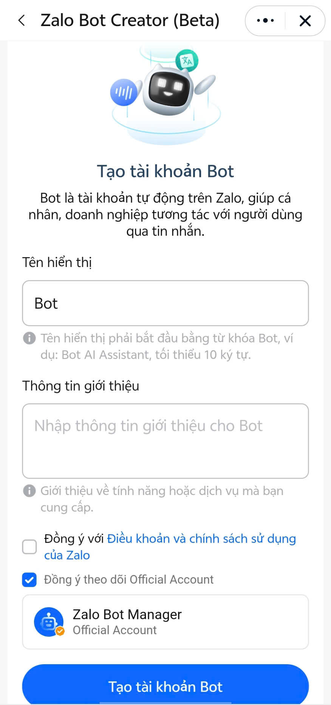
Bấm Tạo tài khoản Bot và kiểm bot mới xuất hiện trong Danh sách bot của bạn.
Dấu hiệu đạt
Bot mới xuất hiện với đúng tên bạn đặt.
Đọc KHOI-TAO-BOT.md và tiến độ. Tôi đang làm Bài 2 · Tạo bot Zalo của bạn, phần “Tạo bot của bạn”. Kết quả tôi gặp: [dán câu báo lỗi hoặc mô tả tại đây]. Hãy kiểm nguyên nhân, giữ dữ liệu đang có và chỉ tôi bước cần làm tiếp. Không yêu cầu tôi gửi khóa hoặc mật khẩu.Giữ khóa Bot Token
Đóng Bot Creator, quay về phần Tin nhắn trong Zalo. Bạn sẽ thấy tin nhắn do bot vừa tạo gửi, có thông báo khởi tạo thành công và mã Bot Token. Mở tin nhắn này.
Bot Token là khóa để chương trình gửi tin bằng đúng bot của bạn. Sao chép khóa trong tin nhắn khởi tạo và cất riêng để dùng ở Bài 3. Không gửi khóa cho AI hoặc chụp ảnh để lộ khóa.
Bot chưa kết nối với chương trình trả lời nên lúc này nhắn chưa được trả lời là bình thường. Có bot và đã cất khóa Bot Token thì sang Bài 3.
Dấu hiệu đạt
Bạn tìm được Bot Token và giữ riêng để nhập ở Bài 3.
Đọc KHOI-TAO-BOT.md và tiến độ. Tôi đang làm Bài 2 · Tạo bot Zalo của bạn, phần “Giữ khóa Bot Token”. Kết quả tôi gặp: [dán câu báo lỗi hoặc mô tả tại đây]. Hãy kiểm nguyên nhân, giữ dữ liệu đang có và chỉ tôi bước cần làm tiếp. Không yêu cầu tôi gửi khóa hoặc mật khẩu.Đối chiếu ngày 12/10/2026: hướng dẫn chính thức. Tên nút có thể thay đổi theo phiên bản.
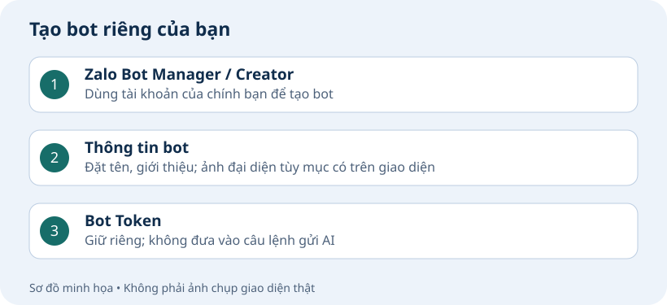
Dấu hiệu đã xong
Bạn thấy bot mới trong Zalo và đã cất riêng khóa Bot Token.
Nếu chưa đạt, báo tên bước và thông báo lỗi đã che khóa cho AI.
Cho bot trả lời khi máy tính tắt
Đưa chương trình bot lên Cloudflare để nhận và trả lời tin trên Zalo.
Bài này cho bạn cái gì?
Bot trả lời một câu có sẵn trên Zalo, kể cả khi máy tính cài bot đã tắt.
Đăng nhập Cloudflare
Mở https://dash.cloudflare.com/ bằng trình duyệt, đăng nhập tài khoản của bạn. Khuyến nghị chọn đăng nhập bằng tài khoản Google cho nhanh.
Ở cột bên trái, mở Compute → chọn Workers & Pages. Ghi nhớ tài khoản đang chọn; chưa bấm tạo một ứng dụng mẫu.
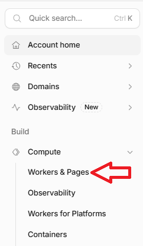
Giữ trang này mở. AI sẽ đưa chương trình bot lên Cloudflare, nơi bot chạy kể cả khi bạn tắt máy tính. Chương trình được gọi là Worker; AI sẽ báo tên để bạn mở đúng mục.
Dấu hiệu đạt
Bạn đăng nhập được Cloudflare của mình.
Đọc KHOI-TAO-BOT.md và tiến độ. Tôi đang làm Bài 3 · Cho bot trả lời khi máy tính tắt, phần “Đăng nhập Cloudflare”. Kết quả tôi gặp: [dán câu báo lỗi hoặc mô tả tại đây]. Hãy kiểm nguyên nhân, giữ dữ liệu đang có và chỉ tôi bước cần làm tiếp. Không yêu cầu tôi gửi khóa hoặc mật khẩu.AI đưa chương trình bot lên Cloudflare
Sau khi đưa bot lên Cloudflare, AI sẽ gửi bạn một địa chỉ kết thúc bằng /webhook. Đây là nơi Zalo chuyển tin nhắn đến chương trình bot. Bạn chỉ cần sao chép nguyên địa chỉ AI báo để dán vào Zalo ở bước sau; không cần mua tên miền.
Đọc KHOI-TAO-BOT.md và tiến độ. Làm phần chuẩn bị Bài 3: kiểm bộ mã và đưa bot mới lên Cloudflare. Báo địa chỉ webhook và hướng dẫn tôi nhập hai khóa riêng.Dấu hiệu đạt
AI báo đã đưa chương trình lên Cloudflare và đưa địa chỉ nhận tin.
Đọc KHOI-TAO-BOT.md và tiến độ. Tôi đang làm Bài 3 · Cho bot trả lời khi máy tính tắt, phần “AI đưa chương trình bot lên Cloudflare”. Kết quả tôi gặp: [dán câu báo lỗi hoặc mô tả tại đây]. Hãy kiểm nguyên nhân, giữ dữ liệu đang có và chỉ tôi bước cần làm tiếp. Không yêu cầu tôi gửi khóa hoặc mật khẩu.Xác nhận quyền kết nối Cloudflare khi AI yêu cầu
Nếu AI mở trang Wrangler wants to access your account, kiểm đúng tài khoản Cloudflare rồi bấm Authorize / Allow (cho phép công cụ đưa bot lên tài khoản này). Nếu AI báo đã đăng nhập được thì bỏ qua bước này.
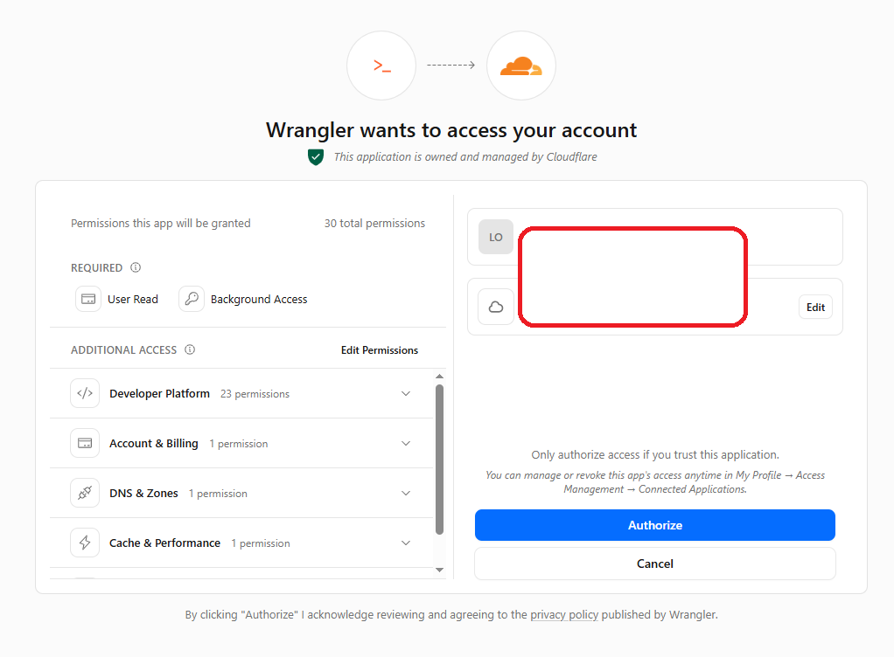
Khi thấy Authorization granted to Wrangler (đã cấp quyền), quay lại AI để tiếp tục. Nếu trang báo lỗi kết nối, dùng câu nhờ AI kiểm ở phần ngay trên.
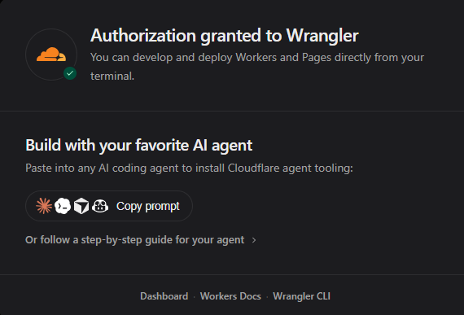
Dấu hiệu đạt
AI kiểm được tài khoản Cloudflare đã kết nối.
Đọc KHOI-TAO-BOT.md và tiến độ. Tôi đang làm Bài 3 · Cho bot trả lời khi máy tính tắt, phần “Xác nhận quyền kết nối Cloudflare khi AI yêu cầu”. Kết quả tôi gặp: [dán câu báo lỗi hoặc mô tả tại đây]. Hãy kiểm nguyên nhân, giữ dữ liệu đang có và chỉ tôi bước cần làm tiếp. Không yêu cầu tôi gửi khóa hoặc mật khẩu.Lưu hai khóa trên Cloudflare
Tạo WEBHOOK_SECRET: chọn đúng lệnh cho máy của bạn bên dưới và chạy đúng một lần. Lệnh tạo khóa ngẫu nhiên 48 ký tự rồi chép vào clipboard; màn hình không hiện khóa là bình thường. Dán khóa vào nơi lưu riêng, sau đó dùng cùng giá trị cho WEBHOOK_SECRET trên Cloudflare và Secret Token của Zalo. Không chạy lại lệnh để lấy khóa cho ô thứ hai vì mỗi lần sẽ tạo khóa khác. Nếu đang có khóa dùng được thì giữ nguyên, không tạo lại.
Windows: mở PowerShell, dùng lệnh này.
node -e "process.stdout.write(require('node:crypto').randomBytes(24).toString('hex'))" | Set-ClipboardMac: mở Terminal, dùng lệnh này.
node -e "process.stdout.write(require('node:crypto').randomBytes(24).toString('hex'))" | pbcopyQuay lại Workers & Pages, làm mới danh sách rồi mở đúng Worker mới AI vừa báo cho bộ này; không mở Worker của bot đang chạy khác.
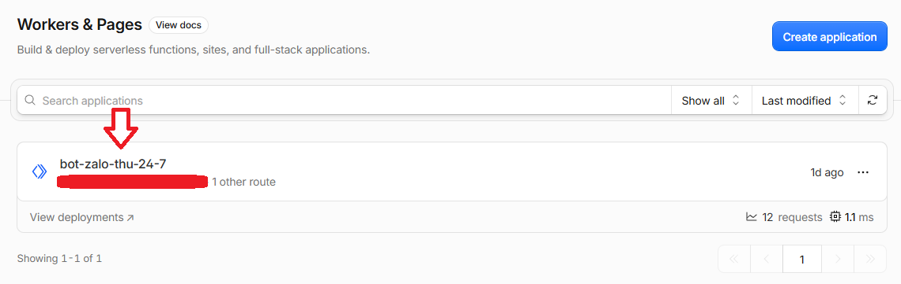
Chọn Settings → Runtime variables and secrets → Add variable. Chọn loại Secret, đặt tên WEBHOOK_SECRET và dán khóa vừa tạo ở hướng dẫn trên. Không dùng Bot Token thay thế.
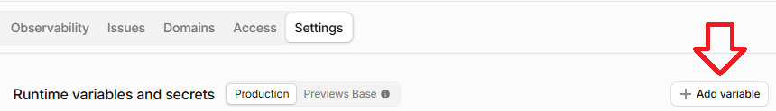
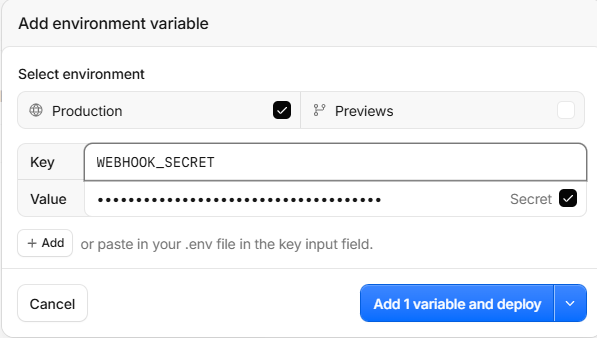
Bấm Add variable để thêm biến thứ hai; chọn loại Secret, đặt tên ZALO_BOT_TOKEN và nhập Bot Token đã giữ ở bài 2.
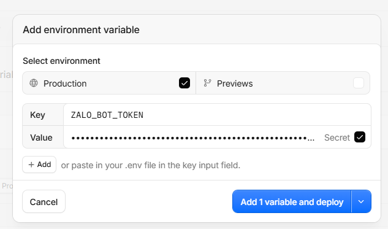
Bấm Deploy hoặc Add variable and deploy (có thể hiện Add 1 variable and deploy) để lưu. Chọn Production, tức phần cài đặt bot đang dùng; chưa cần mục Previews dành cho chạy thử.
Dấu hiệu đạt
Hai khóa đã lưu trong mục Secret, không dán vào chat AI.
Đọc KHOI-TAO-BOT.md và tiến độ. Tôi đang làm Bài 3 · Cho bot trả lời khi máy tính tắt, phần “Lưu hai khóa trên Cloudflare”. Kết quả tôi gặp: [dán câu báo lỗi hoặc mô tả tại đây]. Hãy kiểm nguyên nhân, giữ dữ liệu đang có và chỉ tôi bước cần làm tiếp. Không yêu cầu tôi gửi khóa hoặc mật khẩu.Dán địa chỉ nhận tin vào Zalo
Trên điện thoại mở Bot Creator → bot mới đã tạo cho bộ này ở Bài 2 → Thiết lập chung. Kiểm tên bot trước khi lưu; không sửa webhook của bot khác.
Ô Webhook URL: dán nguyên địa chỉ nhận tin AI đã báo, thường kết thúc bằng /webhook. Mỗi bộ bot có địa chỉ riêng, không dùng địa chỉ của người hướng dẫn.
Điền Secret Token bằng chính giá trị WEBHOOK_SECRET đã lưu trên Cloudflare. Đây là khóa webhook, khác Bot Token.
Nếu không còn bản khóa đã cất riêng, chọn đúng lệnh Windows hoặc Mac bên dưới để lấy khóa mới. Cất khóa mới, rồi dùng đúng cùng giá trị để thay WEBHOOK_SECRET trong Production của Worker → lưu/deploy, và Secret Token trong Zalo → Lưu thay đổi. Phải cập nhật cả hai nơi. Không thay ZALO_BOT_TOKEN; dấu chấm hoặc dấu * che trên màn hình không phải khóa để sao chép.
Windows: mở PowerShell, dùng lệnh này.
node -e "process.stdout.write(require('node:crypto').randomBytes(24).toString('hex'))" | Set-ClipboardMac: mở Terminal, dùng lệnh này.
node -e "process.stdout.write(require('node:crypto').randomBytes(24).toString('hex'))" | pbcopy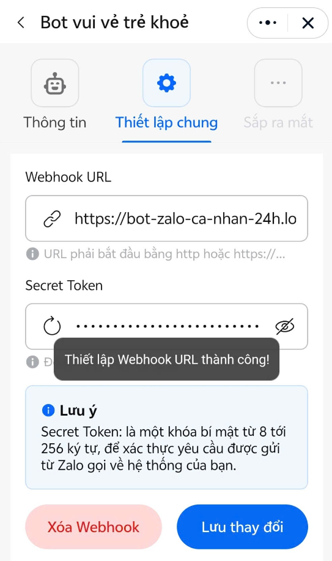
Bấm Lưu thay đổi. Không bấm Reset Bot Token hoặc Xóa Webhook để thử mò.
Dấu hiệu đạt
Địa chỉ webhook đã lưu trong Zalo.
Đọc KHOI-TAO-BOT.md và tiến độ. Tôi đang làm Bài 3 · Cho bot trả lời khi máy tính tắt, phần “Dán địa chỉ nhận tin vào Zalo”. Kết quả tôi gặp: [dán câu báo lỗi hoặc mô tả tại đây]. Hãy kiểm nguyên nhân, giữ dữ liệu đang có và chỉ tôi bước cần làm tiếp. Không yêu cầu tôi gửi khóa hoặc mật khẩu.AI kiểm kết nối để bot bắt đầu trả lời
Nếu bot chưa trả lời, báo AI kiểm nguyên nhân. Chỉ làm phần bên dưới khi AI xác định Cloudflare đang chặn kết nối với mã lỗi 1010.
Đọc KHOI-TAO-BOT.md và tiến độ. Tôi đã lưu hai khóa và webhook. Tiếp Bài 3: kiểm kết nối, bật phản hồi cố định và báo khi tôi có thể gửi tin thử.Dấu hiệu đạt
AI báo kết nối đã kiểm và bot sẵn sàng nhận tin thử.
Đọc KHOI-TAO-BOT.md và tiến độ. Tôi đang làm Bài 3 · Cho bot trả lời khi máy tính tắt, phần “AI kiểm kết nối để bot bắt đầu trả lời”. Kết quả tôi gặp: [dán câu báo lỗi hoặc mô tả tại đây]. Hãy kiểm nguyên nhân, giữ dữ liệu đang có và chỉ tôi bước cần làm tiếp. Không yêu cầu tôi gửi khóa hoặc mật khẩu.Kiểm bot chạy khi laptop tắt
Gửi tin khi AI báo đã sẵn sàng và mở nhật ký.
Gửi vào bot:
Kiểm kết nối Bài 3Mở chat bot mới của bộ này và gửi một tin thử khi AI báo đã sẵn sàng; kiểm đúng tên bot, không nhắn bot cũ để kiểm bộ mới.
Đạt khi bot trả đúng một lần cho mỗi tin thử. Muốn kiểm bot không phụ thuộc máy tính: tắt máy tính đang cài bot rồi nhắn một tin mới bằng điện thoại.
Báo kết quả cho AI. Bot trả lời được khi laptop tắt là đạt phép kiểm này.
Dấu hiệu đạt
Bot trả lời trên Zalo ngay cả khi laptop cài bot đã tắt.
Đọc KHOI-TAO-BOT.md và tiến độ. Tôi đang làm Bài 3 · Cho bot trả lời khi máy tính tắt, phần “Kiểm bot chạy khi laptop tắt”. Kết quả tôi gặp: [dán câu báo lỗi hoặc mô tả tại đây]. Hãy kiểm nguyên nhân, giữ dữ liệu đang có và chỉ tôi bước cần làm tiếp. Không yêu cầu tôi gửi khóa hoặc mật khẩu.Đối chiếu ngày 12/10/2026: hướng dẫn chính thức. Tên nút có thể thay đổi theo phiên bản.
Dấu hiệu đã xong
Bot trả lời một câu có sẵn trên Zalo, kể cả khi máy tính cài bot đã tắt.
Nếu chưa đạt, báo tên bước và thông báo lỗi đã che khóa cho AI.
Bật AI và theo dõi chi phí
Kết nối OpenAI để bot trả lời câu hỏi thay vì chỉ gửi một câu có sẵn.
Bài này cho bạn cái gì?
Bot trả lời đúng câu thử và bạn biết nơi xem phí sử dụng OpenAI.
Tạo phần sử dụng và khóa OpenAI riêng cho bot
Mở OpenAI Platform và đăng nhập tài khoản của bạn. Phí để bot dùng AI trả lời được tính riêng với gói ChatGPT/Codex bạn dùng để cài bot.
Chọn Settings ở cột trái → mở Organization settings ở góc phải → chọn Projects ở cột trái → nhấn + Create để tạo Project mới (một phần riêng để quản lý khóa và chi phí của bot). Đặt tên dễ nhận diện. Nếu Project chưa tự xuất hiện, tải lại trang rồi click vào đúng Project vừa tạo; sau đó mở mục Limits.
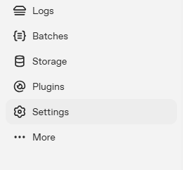
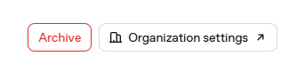
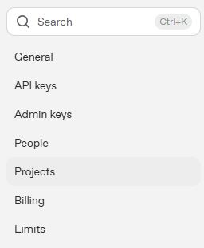
Trong Project mở Limits → tại Spend nhấn Set spend limit → nhập Monthly spend limit theo mức bạn chọn (ví dụ 1 USD/tháng) → bật Enforce a hard limit → nhấn Set spend limit để lưu. Thành công khi hiện Project spend limit và nhãn Limit enforced như ảnh. Khi chạm hạn mức, các yêu cầu mới sẽ bị từ chối với mã 429; việc chặn có độ trễ nên chi tiêu có thể vượt nhẹ mức đã đặt.
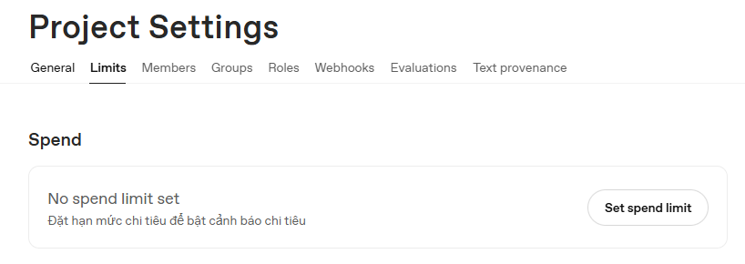
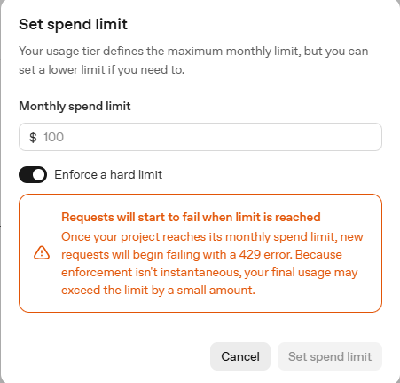
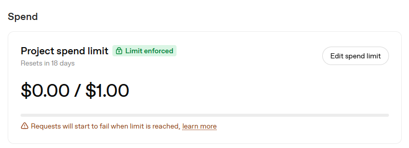
Vào API keys ở cột trái → Create new secret key. Trong Owned by chọn You; nhập Name dễ nhận diện, chọn đúng Project vừa tạo (API BOT ZALO trong ảnh là ví dụ), chọn Ngày hết hạn phù hợp. Permissions để All như ảnh cho lượt cài này, rồi nhấn Create secret key và cất key riêng. Ghi nhớ ngày hết hạn để thay key khi cần; xem Usage để theo dõi dùng thực tế. Không gửi key cho AI.
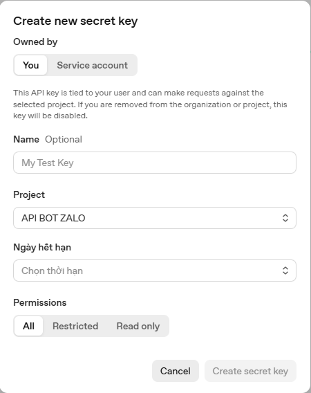
Trong Cloudflare mở Workers & Pages → mở Worker bot đã được AI đưa lên Cloudflare ở Bài 3 → Settings → Runtime variables and secrets → chọn Production → Add variable. Ô Key nhập OPENAI_API_KEY; ô Value dán API key riêng, đánh dấu Secret → bấm Add 1 variable and deploy để lưu.
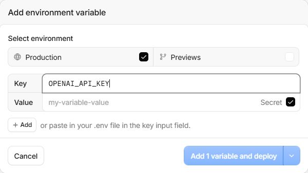
Dấu hiệu đạt
Bạn đã tạo phần sử dụng riêng, lưu khóa và chọn mức chi tiêu cho bot.
Đọc KHOI-TAO-BOT.md và tiến độ. Tôi đang làm Bài 4 · Bật AI và theo dõi chi phí, phần “Tạo phần sử dụng và khóa OpenAI riêng cho bot”. Kết quả tôi gặp: [dán câu báo lỗi hoặc mô tả tại đây]. Hãy kiểm nguyên nhân, giữ dữ liệu đang có và chỉ tôi bước cần làm tiếp. Không yêu cầu tôi gửi khóa hoặc mật khẩu.AI bật và kiểm kết nối
Đọc KHOI-TAO-BOT.md và tiến độ. Tôi đã lưu khóa OpenAI. Làm Bài 4: bật AI, kiểm kết nối và đưa một câu để tôi nhắn thử bot.Dấu hiệu đạt
AI báo đã kết nối OpenAI và đưa câu để nhắn thử.
Đọc KHOI-TAO-BOT.md và tiến độ. Tôi đang làm Bài 4 · Bật AI và theo dõi chi phí, phần “AI bật và kiểm kết nối”. Kết quả tôi gặp: [dán câu báo lỗi hoặc mô tả tại đây]. Hãy kiểm nguyên nhân, giữ dữ liệu đang có và chỉ tôi bước cần làm tiếp. Không yêu cầu tôi gửi khóa hoặc mật khẩu.Kiểm một câu mới
Sau khi AI báo sẵn sàng, nhắn bot: 2 cộng 3 bằng bao nhiêu?
Đạt khi bot trả 5. Nếu bot báo lỗi, gửi nguyên lời báo lỗi cho AI đang cài bot kiểm. Che khóa nếu có trong ảnh; không liên tục gửi lại cùng câu hỏi.
Dấu hiệu đạt
Bot trả lời được câu hỏi mới bằng AI.
Đọc KHOI-TAO-BOT.md và tiến độ. Tôi đang làm Bài 4 · Bật AI và theo dõi chi phí, phần “Kiểm một câu mới”. Kết quả tôi gặp: [dán câu báo lỗi hoặc mô tả tại đây]. Hãy kiểm nguyên nhân, giữ dữ liệu đang có và chỉ tôi bước cần làm tiếp. Không yêu cầu tôi gửi khóa hoặc mật khẩu.Đối chiếu ngày 12/10/2026: hướng dẫn chính thức. Tên nút có thể thay đổi theo phiên bản.
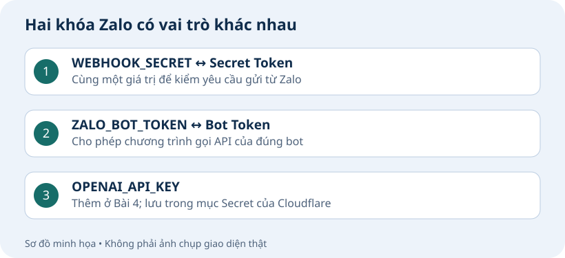
Dấu hiệu đã xong
Bot trả lời đúng câu thử và bạn biết nơi xem phí sử dụng OpenAI.
Nếu chưa đạt, báo tên bước và thông báo lỗi đã che khóa cho AI.
Cho bot nhớ cuộc trò chuyện
Chọn có lưu hội thoại hay không; nếu bật, bot có thể dùng tin trước đó trong cùng cuộc chat.
Bài này cho bạn cái gì?
Lựa chọn lưu hội thoại được ghi nhận. Nếu bật, bot trả lời được câu hỏi dựa trên tin vừa gửi.
Bạn có muốn bot nhớ tin nhắn trước đó không?
Ví dụ: bạn nhắn “Tôi thích màu xanh lá”, rồi hỏi “Tôi vừa nói mình thích màu gì?”. Khi bật phần nhớ hội thoại, bot có thể dùng tin trước đó để trả lời.
Nếu đồng ý, tin nhắn gốc được lưu tối đa 30 ngày. Bạn có thể chọn thêm bản tóm tắt những điều cần nhớ, giữ đến khi bạn chủ động xóa.
Nếu không muốn lưu, chọn không lưu. Bot vẫn trả lời câu hỏi bạn đang gửi.
Dấu hiệu đạt
Bạn đã hiểu và chọn có lưu tin nhắn, bản tóm tắt hay không.
Đọc KHOI-TAO-BOT.md và tiến độ. Tôi đang làm Bài 5 · Cho bot nhớ cuộc trò chuyện, phần “Bạn có muốn bot nhớ tin nhắn trước đó không?”. Kết quả tôi gặp: [dán câu báo lỗi hoặc mô tả tại đây]. Hãy kiểm nguyên nhân, giữ dữ liệu đang có và chỉ tôi bước cần làm tiếp. Không yêu cầu tôi gửi khóa hoặc mật khẩu.AI cấu hình theo lựa chọn của bạn
Đọc KHOI-TAO-BOT.md và tiến độ. Làm Bài 5: hỏi tôi có đồng ý lưu tin nhắn 30 ngày và giữ bản tóm tắt đến khi chủ động xóa hay không, rồi cấu hình theo lựa chọn.Dấu hiệu đạt
AI hỏi hoặc xác nhận lựa chọn lưu của bạn.
Đọc KHOI-TAO-BOT.md và tiến độ. Tôi đang làm Bài 5 · Cho bot nhớ cuộc trò chuyện, phần “AI cấu hình theo lựa chọn của bạn”. Kết quả tôi gặp: [dán câu báo lỗi hoặc mô tả tại đây]. Hãy kiểm nguyên nhân, giữ dữ liệu đang có và chỉ tôi bước cần làm tiếp. Không yêu cầu tôi gửi khóa hoặc mật khẩu.Trả lời lựa chọn cho AI
Copy một trong ba lựa chọn dưới đây, gửi vào AI đang làm dự án bot của bạn.
Lưu tin nhắn và giữ bản tóm tắt
Chỉ lưu tin nhắn 30 ngày
Không lưu hội thoại
Dấu hiệu đạt
Bạn đã trả lời lựa chọn để AI cấu hình.
Đọc KHOI-TAO-BOT.md và tiến độ. Tôi đang làm Bài 5 · Cho bot nhớ cuộc trò chuyện, phần “Trả lời lựa chọn cho AI”. Kết quả tôi gặp: [dán câu báo lỗi hoặc mô tả tại đây]. Hãy kiểm nguyên nhân, giữ dữ liệu đang có và chỉ tôi bước cần làm tiếp. Không yêu cầu tôi gửi khóa hoặc mật khẩu.Kiểm phần nhớ hội thoại
Nếu chọn không lưu: khi AI xác nhận bot không lưu hội thoại, bạn sang Bài 6.
Nếu chọn lưu: chờ AI báo đã cấu hình xong, rồi gửi lần lượt hai tin dưới đây trong cùng chat riêng với bot.
Đạt khi bot trả lời bạn thích màu xanh lá. Báo kết quả cho AI ghi tiến độ; nếu sai thì gửi nguyên câu bot trả để AI kiểm.
Gửi vào bot:
Tôi thích màu xanh lá.Tôi vừa nói mình thích màu gì?Dấu hiệu đạt
Kết quả hỏi lại đúng với lựa chọn lưu đã bật; bạn đã báo kết quả cho AI.
Đọc KHOI-TAO-BOT.md và tiến độ. Tôi đang làm Bài 5 · Cho bot nhớ cuộc trò chuyện, phần “Kiểm phần nhớ hội thoại”. Kết quả tôi gặp: [dán câu báo lỗi hoặc mô tả tại đây]. Hãy kiểm nguyên nhân, giữ dữ liệu đang có và chỉ tôi bước cần làm tiếp. Không yêu cầu tôi gửi khóa hoặc mật khẩu.Xem hoặc xóa điều bot nhớ
Chỉ dùng phần này khi đã chọn giữ bản tóm tắt. Tóm tắt được tạo sau khi có đủ cuộc trò chuyện; mới gửi vài tin thì chưa có là bình thường.
Gửi /bonho để xem các điều bot đã nhớ. Muốn quên một điều, gửi /quen kèm mã mục bot vừa trả. Để tránh nhớ lại điều vừa xóa, bot cũng bỏ những tin từng dùng để ghi nhớ điều đó và các tin gần đây chưa được đưa vào tóm tắt. Các điều khác trong tóm tắt vẫn được giữ.
Muốn xóa toàn bộ bộ nhớ của bạn trong chat này, gửi /xoabonho xac-nhan. Tin bạn gửi sau đó có thể tạo bộ nhớ mới.
Bot dùng OpenAI để đọc và cập nhật tóm tắt nên có thể tốn phí ngay cả khi không tìm thấy điều mới cần nhớ. Bạn không cần nhắn thêm nhiều tin chỉ để làm xong bài này.
Xem điều bot đã nhớ:
/bonhoDấu hiệu đạt
Bạn biết xem bộ nhớ và cách yêu cầu xóa khi cần.
Đọc KHOI-TAO-BOT.md và tiến độ. Tôi đang làm Bài 5 · Cho bot nhớ cuộc trò chuyện, phần “Xem hoặc xóa điều bot nhớ”. Kết quả tôi gặp: [dán câu báo lỗi hoặc mô tả tại đây]. Hãy kiểm nguyên nhân, giữ dữ liệu đang có và chỉ tôi bước cần làm tiếp. Không yêu cầu tôi gửi khóa hoặc mật khẩu.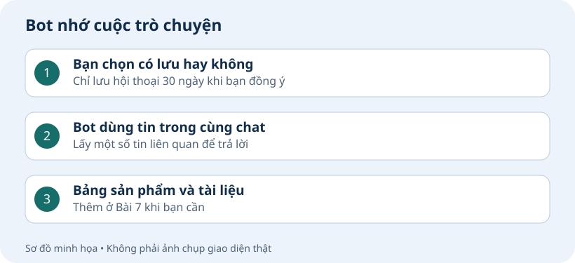
Dấu hiệu đã xong
Lựa chọn lưu hội thoại được ghi nhận. Nếu bật, bot trả lời được câu hỏi dựa trên tin vừa gửi.
Nếu chưa đạt, báo tên bước và thông báo lỗi đã che khóa cho AI.
Quyền, nhóm và đọc ảnh
Chủ có quyền riêng; thành viên gọi bot đúng cách.
Bài này cho bạn cái gì?
Bạn có quyền quản lý và bot đọc được ảnh gửi trong chat riêng. Nếu dùng nhóm, bot trả lời khi bạn gọi @bot trong nhóm đã bật.
Lấy mã tài khoản để quản lý bot
Gửi vào chat riêng với bot để lấy ID:
/idDùng tài khoản sẽ quản lý bot, gửi /id trong chat riêng với bot. Bot trả một mã nhận diện tài khoản của bạn. Đến bước tiếp theo, AI hướng dẫn bạn lưu mã này để cấp quyền quản lý.
ID là mã nhận diện tài khoản Zalo của bạn. Giữ riêng để nhập ở bước tiếp theo theo hướng dẫn của AI; không gửi vào chat AI hoặc đăng công khai.
Dấu hiệu đạt
Bạn lấy được mã tài khoản quản lý để nhập riêng theo hướng dẫn.
Đọc KHOI-TAO-BOT.md và tiến độ. Tôi đang làm Bài 6 · Quyền, nhóm và đọc ảnh, phần “Lấy mã tài khoản để quản lý bot”. Kết quả tôi gặp: [dán câu báo lỗi hoặc mô tả tại đây]. Hãy kiểm nguyên nhân, giữ dữ liệu đang có và chỉ tôi bước cần làm tiếp. Không yêu cầu tôi gửi khóa hoặc mật khẩu.AI chuẩn bị quyền, nhóm và ảnh riêng
Đọc KHOI-TAO-BOT.md và tiến độ. Làm Bài 6: thiết lập người quản lý, bật đọc ảnh chat riêng và chuẩn bị nhóm nếu tôi dùng. Hướng dẫn tôi nhập ID riêng và báo bước cần làm tiếp.Dấu hiệu đạt
AI báo quyền quản lý và đọc ảnh chat riêng đã sẵn sàng.
Đọc KHOI-TAO-BOT.md và tiến độ. Tôi đang làm Bài 6 · Quyền, nhóm và đọc ảnh, phần “AI chuẩn bị quyền, nhóm và ảnh riêng”. Kết quả tôi gặp: [dán câu báo lỗi hoặc mô tả tại đây]. Hãy kiểm nguyên nhân, giữ dữ liệu đang có và chỉ tôi bước cần làm tiếp. Không yêu cầu tôi gửi khóa hoặc mật khẩu.Chọn ai được chat riêng với bot
Lệnh chủ gửi vào chat riêng với bot:
/quyenriengDùng tài khoản quản lý, gửi /quyenrieng trong chat riêng với bot. Mở link bot gửi; link dùng trong 15 phút và chỉ nên giữ cho mình.
Trang có nút bật/tắt giới hạn. Tắt: mọi người nhắn được bot. Bật: chỉ chủ bot và người trong danh sách được trả lời. Chọn rồi bấm Lưu cài đặt.
Muốn cho bạn bè dùng: nhờ họ gửi /id trong chat riêng với bot, lấy ID họ gửi cho bạn, điền mỗi dòng một ID rồi lưu. Không cần đưa ID cho AI; người chưa được phép chỉ lấy được ID, các câu hỏi và ảnh không được xử lý.
Giới hạn áp dụng dù người đó mở bot từ đường dẫn, nhóm hay nơi khác. Không đổi quyền trong nhóm. Mới cài giữ giới hạn tắt; bật khi bạn muốn bot chỉ phục vụ mình hoặc những người được chọn.
Dấu hiệu đạt
Bạn chọn được người được phép chat riêng với bot.
Đọc KHOI-TAO-BOT.md và tiến độ. Tôi đang làm Bài 6 · Quyền, nhóm và đọc ảnh, phần “Chọn ai được chat riêng với bot”. Kết quả tôi gặp: [dán câu báo lỗi hoặc mô tả tại đây]. Hãy kiểm nguyên nhân, giữ dữ liệu đang có và chỉ tôi bước cần làm tiếp. Không yêu cầu tôi gửi khóa hoặc mật khẩu.Bật bot trong nhóm
Dùng nhóm thì làm các bước dưới đây. Chỉ dùng chat riêng thì sang phần đọc ảnh.
Mở Bot Creator → đúng bot → Thông tin → Chia sẻ. Deeplink là link để người khác mở bot và bắt đầu chat riêng. Muốn thêm vào nhóm, dùng mục Link mời vào nhóm bên dưới.
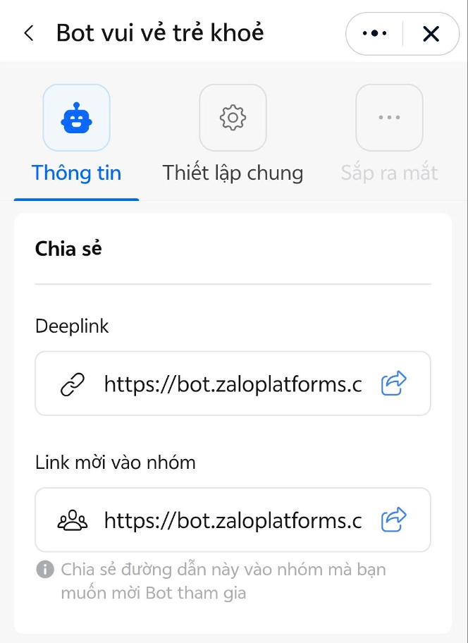
Chia sẻ Link mời vào nhóm bạn quản lý. Trong nhóm sẽ hiện thẻ mời bot: mở đường link trên thẻ, xác nhận thêm bot, rồi quay lại nhóm kiểm bot đã tham gia.
Sau khi bot đã vào nhóm, dùng tài khoản quản lý đã lưu: chọn @ đúng bot và gửi bật nhóm. Phải thấy lời xác nhận đã bật.
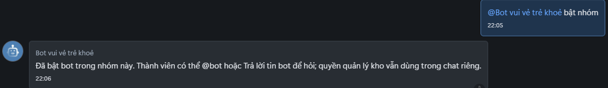
Mỗi câu hỏi trong nhóm chọn @bot. Thêm bot vào nhóm và bật nhóm là hai thao tác riêng; người khác mời bot không tự có quyền quản lý.
Dấu hiệu đạt
Nếu dùng nhóm: bot xác nhận đã bật và trả lời câu có @bot. Không dùng nhóm thì bỏ qua.
Đọc KHOI-TAO-BOT.md và tiến độ. Tôi đang làm Bài 6 · Quyền, nhóm và đọc ảnh, phần “Bật bot trong nhóm”. Kết quả tôi gặp: [dán câu báo lỗi hoặc mô tả tại đây]. Hãy kiểm nguyên nhân, giữ dữ liệu đang có và chỉ tôi bước cần làm tiếp. Không yêu cầu tôi gửi khóa hoặc mật khẩu.Đọc ảnh trong chat riêng
Gửi một ảnh vào chat riêng với bot để kiểm khả năng đọc ảnh.
Gửi một ảnh PNG hoặc JPEG rõ chữ vào chat riêng với bot. Ảnh tối đa khoảng 8,4 MB (8 MiB là đơn vị dung lượng máy tính dùng). Bot đọc được nội dung chính là đạt; gửi lời bot trả cho AI để ghi kết quả.
Bot mô tả hoặc đọc được nội dung chính của ảnh vừa gửi là đạt phần ảnh Bài 6. Hỏi tiếp bằng một tin mới, như “Hình trong ảnh vừa gửi có đẹp không?”, được cấu hình ở Bài 8. Chưa làm Bài 8 thì không dùng câu hỏi tiếp này để kết luận Bài 6 bị lỗi.
Muốn xem dung lượng trên máy tính: lưu ảnh thành file → chuột phải file → Properties (Thuộc tính) → xem Size (Kích thước). Trên điện thoại, xem Thông tin/Chi tiết của ảnh; vị trí tùy ứng dụng. Không cần tự kiểm từng ảnh nếu bot không báo cụ thể đã vượt dung lượng.
Trong nhóm, hãy chọn @bot khi đặt câu hỏi bằng chữ, hoặc dùng nút Trả lời trên một tin của bot. Bot chưa đọc được ảnh gửi trong nhóm và chưa đọc được nội dung tin được trích dẫn.
Bot báo chưa tải được ảnh không đồng nghĩa ảnh quá lớn. Báo nguyên câu trả lời cho AI kiểm lỗi, không cắt ảnh hoặc gửi lặp liên tục.
Dấu hiệu đạt
Bot đọc hoặc mô tả đúng nội dung chính của ảnh bạn gửi trong chat riêng.
Đọc KHOI-TAO-BOT.md và tiến độ. Tôi đang làm Bài 6 · Quyền, nhóm và đọc ảnh, phần “Đọc ảnh trong chat riêng”. Kết quả tôi gặp: [dán câu báo lỗi hoặc mô tả tại đây]. Hãy kiểm nguyên nhân, giữ dữ liệu đang có và chỉ tôi bước cần làm tiếp. Không yêu cầu tôi gửi khóa hoặc mật khẩu.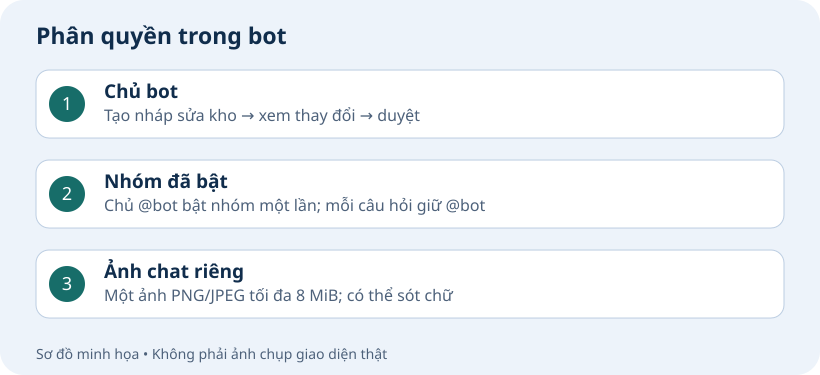
Dấu hiệu đã xong
Bạn có quyền quản lý và bot đọc được ảnh gửi trong chat riêng. Nếu dùng nhóm, bot trả lời khi bạn gọi @bot trong nhóm đã bật.
Nếu chưa đạt, báo tên bước và thông báo lỗi đã che khóa cho AI.
Thêm thông tin riêng cho bot
Đưa nguồn đang có cho AI đọc, kiểm rồi nạp để bot tra cứu; chưa có dữ liệu vẫn dùng bot.
Bài này cho bạn cái gì?
Bot trả lời được theo tài liệu bạn đã nạp. Bạn đã báo kết quả cho AI; đổi cách xưng hô là phần tùy chọn.
Chuẩn bị thông tin bạn đang có
Có dữ liệu: đưa file, link hoặc nội dung cho AI đang cài bot. Có thể là danh sách sản phẩm, tài liệu khóa học, ghi chú cá nhân hoặc câu hỏi thường gặp. Không cần tự đổi sang một mẫu bảng cố định.
Nói rõ bạn muốn bot dùng thông tin để làm gì và cho ai: chỉ bạn tra cứu hay người nhắn bot cũng được dùng.
Chưa có dữ liệu riêng: bỏ phần nạp thông tin, bot vẫn hỏi đáp bình thường. Bạn có thể chọn phần đổi cách xưng hô trong bài này.
Dấu hiệu đạt
Bạn đã gửi nguồn cho AI, hoặc chọn chưa có dữ liệu để nạp.
Đọc KHOI-TAO-BOT.md và tiến độ. Tôi đang làm Bài 7 · Thêm thông tin riêng cho bot, phần “Chuẩn bị thông tin bạn đang có”. Kết quả tôi gặp: [dán câu báo lỗi hoặc mô tả tại đây]. Hãy kiểm nguyên nhân, giữ dữ liệu đang có và chỉ tôi bước cần làm tiếp. Không yêu cầu tôi gửi khóa hoặc mật khẩu.AI đọc tài liệu bạn gửi
Gửi file, link hoặc nội dung cùng câu dưới đây cho AI đang cài bot.
Đọc KHOI-TAO-BOT.md và tiến độ. Làm Bài 7: đọc đầy đủ nguồn tôi gửi, hỏi ai được tra cứu và trình bày thông tin để tôi duyệt trước khi nạp. Sau nạp, đưa 3 câu hỏi kiểm tra kèm các ý trả lời cần đạt, gồm một câu ngoài tài liệu.Dấu hiệu đạt
AI đưa bản nội dung đã đọc để bạn kiểm và duyệt.
Đọc KHOI-TAO-BOT.md và tiến độ. Tôi đang làm Bài 7 · Thêm thông tin riêng cho bot, phần “AI đọc tài liệu bạn gửi”. Kết quả tôi gặp: [dán câu báo lỗi hoặc mô tả tại đây]. Hãy kiểm nguyên nhân, giữ dữ liệu đang có và chỉ tôi bước cần làm tiếp. Không yêu cầu tôi gửi khóa hoặc mật khẩu.Kiểm và duyệt thông tin với AI
AI báo đã đọc những file hoặc trang nào và phần nào chưa đọc được. Kiểm tên, số liệu và các ý quan trọng; thiếu thì yêu cầu sửa trước khi duyệt.
Chọn ai được hỏi về tài liệu: chỉ bạn, hoặc mọi người được phép dùng bot. Không đưa thông tin riêng tư vào phần dành cho mọi người.
Kiểm xong thì gửi câu xác nhận dưới đây cho AI. Chờ AI báo đã nạp thành công rồi hỏi thử.
Gửi cho AI khi thông tin đã đúng:
Dấu hiệu đạt
Bạn đã duyệt đúng nội dung và phạm vi người được tra cứu.
Đọc KHOI-TAO-BOT.md và tiến độ. Tôi đang làm Bài 7 · Thêm thông tin riêng cho bot, phần “Kiểm và duyệt thông tin với AI”. Kết quả tôi gặp: [dán câu báo lỗi hoặc mô tả tại đây]. Hãy kiểm nguyên nhân, giữ dữ liệu đang có và chỉ tôi bước cần làm tiếp. Không yêu cầu tôi gửi khóa hoặc mật khẩu.Hỏi thử và báo kết quả cho AI
Hỏi thử sau khi AI báo đã nạp thành công.
AI đưa sẵn 3 câu hỏi: một câu về nội dung chính, một câu về chi tiết và một câu tài liệu không có câu trả lời. Mỗi câu phải có các ý cần đạt để bạn so.
Copy từng câu gửi vào chat riêng với bot. Câu có dữ liệu cần đúng và đủ ý; câu ngoài tài liệu cần nói chưa có thông tin. Không bắt buộc giống đáp án từng chữ.
Gửi các câu bot trả lời cho AI để ghi kết quả vào tiến độ.
Sau này tài liệu thay đổi, gửi bản mới cho AI kiểm trước khi cập nhật. Bot chưa tự theo dõi thay đổi của link gốc.
Dấu hiệu đạt
Ba câu thử có kết quả đạt theo nội dung AI đã đưa; bạn đã báo lại kết quả.
Đọc KHOI-TAO-BOT.md và tiến độ. Tôi đang làm Bài 7 · Thêm thông tin riêng cho bot, phần “Hỏi thử và báo kết quả cho AI”. Kết quả tôi gặp: [dán câu báo lỗi hoặc mô tả tại đây]. Hãy kiểm nguyên nhân, giữ dữ liệu đang có và chỉ tôi bước cần làm tiếp. Không yêu cầu tôi gửi khóa hoặc mật khẩu.AI chuẩn bị trang quản lý — khi cần
Làm phần này nếu muốn xem nguồn, đổi cách bot trả lời hoặc quản lý ảnh/link. Trang đã sẵn sàng thì không cần bật lại.
Đọc KHOI-TAO-BOT.md và tiến độ. Tôi muốn dùng trang quản lý. Kiểm quyền quản lý và trang đang dùng; nếu chưa sẵn sàng thì cấu hình, kiểm và đưa lên bot bằng quyền đã cấp. Giữ dữ liệu và các chức năng đã đạt. Báo khi tôi có thể mở trang; không yêu cầu tôi đổi cách xưng hô nếu không cần.Dấu hiệu đạt
AI xác nhận trang quản lý đã sẵn sàng; không cần đổi cách xưng hô để dùng các mục khác.
Đọc KHOI-TAO-BOT.md và tiến độ. Tôi đang làm Bài 7 · Thêm thông tin riêng cho bot, phần “AI chuẩn bị trang quản lý — khi cần”. Kết quả tôi gặp: [dán câu báo lỗi hoặc mô tả tại đây]. Hãy kiểm nguyên nhân, giữ dữ liệu đang có và chỉ tôi bước cần làm tiếp. Không yêu cầu tôi gửi khóa hoặc mật khẩu.Mở trang và đổi cách xưng hô
Chỉ mở sau khi AI báo trang đã sẵn sàng.
Gửi vào chat riêng với bot để mở trang quản lý:
/quanly phongcachDùng tài khoản quản lý, gửi lệnh vào chat riêng với bot rồi mở link được trả về. Link dùng trong 15 phút.
Dấu hiệu đạt
Bạn mở được mục Cách bot trả lời bằng tài khoản quản lý.
Đọc KHOI-TAO-BOT.md và tiến độ. Tôi đang làm Bài 7 · Thêm thông tin riêng cho bot, phần “Mở trang và đổi cách xưng hô”. Kết quả tôi gặp: [dán câu báo lỗi hoặc mô tả tại đây]. Hãy kiểm nguyên nhân, giữ dữ liệu đang có và chỉ tôi bước cần làm tiếp. Không yêu cầu tôi gửi khóa hoặc mật khẩu.Lưu cách trả lời bạn muốn
Các giá trị đang hiện là cài đặt bot đang dùng. Nếu đã phù hợp, đóng trang là xong, không cần tạo nháp hoặc lưu lại. Chỉ làm các bước dưới khi bạn muốn sửa.
Điền Cách nói và Xưng hô theo ý bạn. Ví dụ: “Thân thiện, trả lời ngắn” và “Xưng em, gọi theo cách người dùng đã chọn”.
Bấm Xem bản nháp phong cách. Đọc phần Trước khi sửa và Sau khi sửa hiện ngay bên dưới. Đúng thì bấm Áp dụng bản nháp đã xem; chưa áp dụng thì bot chưa đổi.
Quay lại Zalo, hỏi một câu ngắn rồi báo kết quả xưng hô cho AI.
Dấu hiệu đạt
Đã áp dụng cách trả lời mong muốn; nếu giữ mặc định thì không cần lưu.
Đọc KHOI-TAO-BOT.md và tiến độ. Tôi đang làm Bài 7 · Thêm thông tin riêng cho bot, phần “Lưu cách trả lời bạn muốn”. Kết quả tôi gặp: [dán câu báo lỗi hoặc mô tả tại đây]. Hãy kiểm nguyên nhân, giữ dữ liệu đang có và chỉ tôi bước cần làm tiếp. Không yêu cầu tôi gửi khóa hoặc mật khẩu.Xem nguồn thông tin — tùy chọn
Mở khi cần xem hoặc quản lý nguồn. Nếu AI chưa báo trang sẵn sàng, làm phần AI chuẩn bị trang quản lý trước.
Gửi vào chat riêng với bot để mở đúng mục nguồn:
/quanly nguonNguồn đã nạp cùng AI hiển thị nội dung và người được tra cứu. Muốn cập nhật, gửi bản mới cho AI đang cài bot.
Có 3 cách tự thêm nguồn: gõ hoặc dán nội dung, chọn file, hay dán link. Ví dụ: giờ làm việc, chính sách đổi hàng hoặc hướng dẫn sử dụng. Mã và tên có thể để trống để trang tự điền theo nội dung; chọn ai được hỏi về tài liệu, xem lại thay đổi rồi bấm áp dụng.
Muốn sửa, chọn tên nguồn trong danh sách. Muốn ngừng dùng, chọn nguồn rồi bấm nút có tên nguồn đó; xem nháp và áp dụng. Với link website, tích đồng ý cho bot đọc website được ghi ngay bên cạnh.
Dấu hiệu đạt
Bạn xem được thông tin đã nạp; không cần nhập lại.
Đọc KHOI-TAO-BOT.md và tiến độ. Tôi đang làm Bài 7 · Thêm thông tin riêng cho bot, phần “Xem nguồn thông tin — tùy chọn”. Kết quả tôi gặp: [dán câu báo lỗi hoặc mô tả tại đây]. Hãy kiểm nguyên nhân, giữ dữ liệu đang có và chỉ tôi bước cần làm tiếp. Không yêu cầu tôi gửi khóa hoặc mật khẩu.Chuẩn bị ảnh và link bot gửi lại — tùy chọn
Kéo ảnh vào AI hoặc dùng nút đính kèm/Media để chọn nhiều ảnh. Có cả thư mục thì cho AI đọc thư mục đó trong dự án đang mở. Với website/tài liệu công khai, dán link. Gửi cùng câu dưới đây.
Đọc KHOI-TAO-BOT.md và tiến độ. Chuẩn bị ảnh đính kèm hoặc thư mục/link tôi gửi để bot gửi lại. Kiểm và chuẩn bị chức năng quản lý ảnh/link nếu chưa sẵn sàng; giữ phần đã bật. Tự lấy tệp đã nhận; lọc ảnh hợp lệ/trùng và báo tệp bị bỏ. Xem nội dung để gợi ý tên dễ hiểu, mô tả và từ khóa; chưa rõ thì hỏi gộp, không đoán. Mặc định chat riêng. Cho tôi duyệt danh sách và nhắc ảnh/link sẽ được chia sẻ công khai rồi mới tự nạp; giữ các mục cũ. Kiểm kết quả nạp thật, cho câu thử bằng lời thường và dấu hiệu đạt.Sau khi đã kiểm đúng danh sách và quyền chia sẻ, gửi AI:
Dấu hiệu đạt
AI nạp đúng danh sách ảnh/link bạn đã duyệt và đưa cách thử.
Đọc KHOI-TAO-BOT.md và tiến độ. Tôi đang làm Bài 7 · Thêm thông tin riêng cho bot, phần “Chuẩn bị ảnh và link bot gửi lại — tùy chọn”. Kết quả tôi gặp: [dán câu báo lỗi hoặc mô tả tại đây]. Hãy kiểm nguyên nhân, giữ dữ liệu đang có và chỉ tôi bước cần làm tiếp. Không yêu cầu tôi gửi khóa hoặc mật khẩu.Kiểm ảnh và link bot gửi lại
Chờ AI báo nạp thành công rồi thử trên Zalo.
Gửi vào bot:
/tainguyenThử câu yêu cầu AI vừa đưa, ví dụ Gửi ảnh bảng giá nếu đó là tên ảnh đã nạp. Nếu bot đưa danh sách, trả lời số mục muốn nhận, ví dụ 1; gửi xem thêm khi cần xem trang tiếp. Lệnh trên dùng khi muốn xem danh sách.
Đạt khi bot gửi đúng ảnh, hoặc đúng tên và link đã duyệt; bấm link để kiểm mở được. Gửi kết quả cho AI ghi tiến độ.
Dấu hiệu đạt
Bot gửi đúng ảnh/link; câu hỏi không có mục phù hợp không gửi nhầm.
Đọc KHOI-TAO-BOT.md và tiến độ. Tôi đang làm Bài 7 · Thêm thông tin riêng cho bot, phần “Kiểm ảnh và link bot gửi lại”. Kết quả tôi gặp: [dán câu báo lỗi hoặc mô tả tại đây]. Hãy kiểm nguyên nhân, giữ dữ liệu đang có và chỉ tôi bước cần làm tiếp. Không yêu cầu tôi gửi khóa hoặc mật khẩu.Sau này muốn thêm, sửa hoặc ngừng gửi
Gửi AI đang cài bot. Thay Bảng giá bằng tên ảnh/link của bạn.
AI tự kiểm danh mục đang dùng và làm đúng yêu cầu; các mục khác được giữ nguyên. Tên trùng thì AI hỏi chọn.
Ngừng gửi vẫn giữ ảnh để bật lại. Khi AI báo đã ngừng, xin lại ảnh đó: đạt khi bot không gửi ảnh ấy nữa.
Thêm — gửi kèm ảnh hoặc link:
Sửa tên:
Ngừng gửi:
Dấu hiệu đạt
Bạn biết cách nhờ AI thêm, sửa hoặc ngừng gửi một mục theo tên.
Đọc KHOI-TAO-BOT.md và tiến độ. Tôi đang làm Bài 7 · Thêm thông tin riêng cho bot, phần “Sau này muốn thêm, sửa hoặc ngừng gửi”. Kết quả tôi gặp: [dán câu báo lỗi hoặc mô tả tại đây]. Hãy kiểm nguyên nhân, giữ dữ liệu đang có và chỉ tôi bước cần làm tiếp. Không yêu cầu tôi gửi khóa hoặc mật khẩu.Xem hoặc sửa ảnh/link trên trang — tùy chọn
Mở khi muốn xem danh sách hoặc chỉnh một mục đã nạp.
Gửi vào bot:
/quanly tainguyenMở link bot trả. Xem ảnh nhỏ hoặc bấm Xem lớn; dùng ô tìm kiếm để tìm mục cần sửa.
Chọn Sửa thông tin, đặt tên dễ hiểu, mô tả và từ khóa. Có thể bấm AI gợi ý thông tin ảnh đang chọn; nút này có thể phát sinh phí. Bấm Xem thay đổi, kiểm đúng mục vừa sửa rồi Áp dụng thay đổi. Nhiều mục thì dùng Trang trước/Trang tiếp để xem.
Muốn thêm ảnh: chọn nhiều ảnh hoặc thư mục, chọn nơi gửi rồi tải lên. Có thể tự ghi tên/mô tả hoặc tích Nhờ AI gợi ý. Xem nháp rồi áp dụng khi đúng.
Muốn ngừng gửi: chọn đúng ảnh/link, bấm Ngừng gửi, xem nháp rồi áp dụng.
Dấu hiệu đạt
Nếu có sửa: bản đã áp dụng hiện đúng thông tin và bot gửi đúng mục.
Đọc KHOI-TAO-BOT.md và tiến độ. Tôi đang làm Bài 7 · Thêm thông tin riêng cho bot, phần “Xem hoặc sửa ảnh/link trên trang — tùy chọn”. Kết quả tôi gặp: [dán câu báo lỗi hoặc mô tả tại đây]. Hãy kiểm nguyên nhân, giữ dữ liệu đang có và chỉ tôi bước cần làm tiếp. Không yêu cầu tôi gửi khóa hoặc mật khẩu.Dấu hiệu đã xong
Bot trả lời được theo tài liệu bạn đã nạp. Bạn đã báo kết quả cho AI; đổi cách xưng hô là phần tùy chọn.
Nếu chưa đạt, báo tên bước và thông báo lỗi đã che khóa cho AI.
Hỏi bot về tài liệu, tin thoại và video
Gửi tài liệu, tin thoại hoặc video để bot trả lời câu hỏi ngay trên Zalo.
Bài này cho bạn cái gì?
Bot trả lời câu hỏi về các loại tài liệu, tin thoại hoặc video bạn đã chọn ngay trong chat riêng trên Zalo.
Bật chức năng để bot đọc file, nghe tin thoại và trả lời
AI đang cài bot chuẩn bị chức năng. Sau đó bạn gửi file cho bot Zalo và đặt câu hỏi, ví dụ gửi PDF rồi hỏi Tóm tắt giúp tôi.
Đọc KHOI-TAO-BOT.md và tiến độ. Làm Bài 8: bật để bot đọc tài liệu, nghe tin thoại và trả lời câu hỏi về video. Giữ phần đọc ảnh đã đạt. Tự cấu hình, kiểm trên máy và đưa bản mới lên bot trong quyền đã có. Sau đó chỉ tôi cách gửi thử từng loại và kết quả thế nào là đạt. Ghi rõ phần đã thử thật, chưa kết luận mọi thứ hoạt động chỉ từ kiểm thử giả. Trả lời ngắn, dễ hiểu.Dấu hiệu đạt
AI báo chức năng đọc file, tin thoại và video đã sẵn sàng.
Đọc KHOI-TAO-BOT.md và tiến độ. Tôi đang làm Bài 8 · Hỏi bot về tài liệu, tin thoại và video, phần “Bật chức năng để bot đọc file, nghe tin thoại và trả lời”. Kết quả tôi gặp: [dán câu báo lỗi hoặc mô tả tại đây]. Hãy kiểm nguyên nhân, giữ dữ liệu đang có và chỉ tôi bước cần làm tiếp. Không yêu cầu tôi gửi khóa hoặc mật khẩu.Gửi file để bot trả lời trên Zalo
Ví dụ: chọn một file PDF, hỏi Tóm tắt 3 ý chính trong tài liệu này. Bot sẽ gửi câu trả lời vào chat riêng.
Gửi vào chat riêng với bot:
/tepGửi /tep trong chat riêng với bot, mở link bot trả. PDF, Word, file âm thanh và MP4 hiện gửi qua trang này; ảnh và tin thoại có thể gửi thẳng trong Zalo.
Chọn PDF, Word, TXT, file âm thanh hoặc video MP4/MOV. Nhập câu hỏi, để mục đích là Hỏi về file trong chat rồi bấm Tải lên và xử lý.
Tài liệu và file âm thanh tối đa 20 MiB (khoảng 21 MB). Video MP4/MOV tối đa 512 MiB (khoảng 537 MB), dài tối đa 15 phút. Trang tự tách ảnh và âm thanh, bạn không cần tự nén video.
Quay lại Zalo để nhận câu trả lời. Với Word, bot đọc phần chữ. Với video, bot xem những ảnh chụp tại các thời điểm khác nhau và nghe lời thoại nếu tách được: video 10 phút tối đa 240 ảnh, 15 phút tối đa 360 ảnh. Cảnh ít thay đổi dùng ít ảnh hơn. Cách này vẫn có thể bỏ sót cảnh rất ngắn và video dài có thể tốn thêm phí AI.
Dấu hiệu đạt
Bot trả lời đúng nội dung chính và câu hỏi về file đã chọn.
Đọc KHOI-TAO-BOT.md và tiến độ. Tôi đang làm Bài 8 · Hỏi bot về tài liệu, tin thoại và video, phần “Gửi file để bot trả lời trên Zalo”. Kết quả tôi gặp: [dán câu báo lỗi hoặc mô tả tại đây]. Hãy kiểm nguyên nhân, giữ dữ liệu đang có và chỉ tôi bước cần làm tiếp. Không yêu cầu tôi gửi khóa hoặc mật khẩu.Gửi tin thoại và hỏi tiếp về ảnh
Trong chat riêng với bot, bấm micro ghi Hai cộng ba bằng mấy? rồi gửi. Đạt khi bot trả lời bằng 5. Nếu bot im lặng, báo AI kiểm phần bật tin thoại trước.
Tin thoại ghi trực tiếp trong Zalo tối đa 8 MiB (khoảng 8,4 MB). File âm thanh chọn qua trang /tep dùng giới hạn file ở bước trên.
Với ảnh đã gửi trong cùng chat, có thể hỏi tiếp, ví dụ Hình này dùng màu gì? Bot dựa vào nội dung đã đọc trước đó.
Nếu lỗi, đưa thông báo đã che dữ liệu cho AI đang cài bot kiểm; không gửi lại liên tục.
Dấu hiệu đạt
Bot trả lời đúng tin thoại; câu hỏi tiếp về ảnh dùng được nội dung ảnh vừa gửi.
Đọc KHOI-TAO-BOT.md và tiến độ. Tôi đang làm Bài 8 · Hỏi bot về tài liệu, tin thoại và video, phần “Gửi tin thoại và hỏi tiếp về ảnh”. Kết quả tôi gặp: [dán câu báo lỗi hoặc mô tả tại đây]. Hãy kiểm nguyên nhân, giữ dữ liệu đang có và chỉ tôi bước cần làm tiếp. Không yêu cầu tôi gửi khóa hoặc mật khẩu.Dấu hiệu đã xong
Bot trả lời câu hỏi về các loại tài liệu, tin thoại hoặc video bạn đã chọn ngay trong chat riêng trên Zalo.
Nếu chưa đạt, báo tên bước và thông báo lỗi đã che khóa cho AI.
Đặt lịch nhắc và giữ bản sao dữ liệu
Nhờ bot nhắc việc; tải và kiểm một bản sao dữ liệu được bảo vệ bằng mật khẩu.
Bài này cho bạn cái gì?
Bot nhắc đúng hẹn. Bạn tải được file sao lưu, kiểm thấy Bản sao hợp lệ và biết cách khôi phục khi cần.
AI chuẩn bị lịch nhắc và sao lưu
Đọc KHOI-TAO-BOT.md và tiến độ. Làm Bài 9: kiểm và bật lịch nhắc, sao lưu và khôi phục vào nơi lưu mới; không phụ thuộc tôi đã làm Bài 8 hay chưa. Kiểm bằng dữ liệu giả trên máy, giữ nguyên dữ liệu bot đang chạy và không bật đọc file hoặc tin thoại chỉ để dùng lịch nhắc. Sau khi kiểm đạt, đưa bản mới lên bot trong quyền đã có rồi chỉ tôi cách thử lịch, tải và kiểm bản sao. Không yêu cầu tôi gửi mật khẩu hoặc file sao lưu thật. Phần nào đã đạt thì không thử lại.Dấu hiệu đạt
AI báo lịch nhắc và trang sao lưu đã sẵn sàng, giữ nguyên dữ liệu đang có.
Đọc KHOI-TAO-BOT.md và tiến độ. Tôi đang làm Bài 9 · Đặt lịch nhắc và giữ bản sao dữ liệu, phần “AI chuẩn bị lịch nhắc và sao lưu”. Kết quả tôi gặp: [dán câu báo lỗi hoặc mô tả tại đây]. Hãy kiểm nguyên nhân, giữ dữ liệu đang có và chỉ tôi bước cần làm tiếp. Không yêu cầu tôi gửi khóa hoặc mật khẩu.Đặt, xem và hủy lịch
Nhắn bot bằng câu thường, ví dụ Nhắc tôi sau 1 phút kiểm lịch. Cũng có thể ghi Nhắc tôi lúc 9h sáng mai đi mua hoa quả. Đọc lại nội dung và ngày giờ bot xác nhận.
Thiếu ngày hoặc giờ, bot sẽ hỏi thêm và chưa đặt lịch. Trả lời ngày/giờ cần bổ sung, hoặc nhắn hủy để bỏ yêu cầu đang hỏi. Nếu thiếu nội dung, trả lời theo mẫu Nội dung: đi mua hoa quả.
Gửi /lichnhac để xem lịch. Có một lịch đang chờ thì gửi /huynhac để hủy; có nhiều lịch thì thêm số, ví dụ /huynhac 2. Lệnh /nhac vẫn dùng được như trước.
Nếu giữ lịch thử, chờ bot nhắc một lần sau khoảng 1 phút. Lịch không tự lặp hằng ngày; giờ tính theo Việt Nam. Bot chỉ xác nhận đã hẹn khi lưu lịch thành công.
Gửi vào Zalo để đặt, xem hoặc hủy lịch. Lệnh hủy không kèm số dùng khi chỉ có một lịch chờ:
Nhắc tôi sau 1 phút kiểm lịch/lichnhac/huynhacDấu hiệu đạt
Bot nhắc đúng nội dung, đúng lịch; lịch đã hủy không còn chờ.
Đọc KHOI-TAO-BOT.md và tiến độ. Tôi đang làm Bài 9 · Đặt lịch nhắc và giữ bản sao dữ liệu, phần “Đặt, xem và hủy lịch”. Kết quả tôi gặp: [dán câu báo lỗi hoặc mô tả tại đây]. Hãy kiểm nguyên nhân, giữ dữ liệu đang có và chỉ tôi bước cần làm tiếp. Không yêu cầu tôi gửi khóa hoặc mật khẩu.Tải và kiểm bản sao có mật khẩu
Sao lưu giúp lấy lại dữ liệu khi sửa nhầm hoặc cần dựng lại nơi lưu của chính bot này. Không cần tạo bot Zalo khác hoặc học lại từ đầu.
Dùng tài khoản quản lý, gửi vào chat riêng với bot:
/khoiphucMở link bot trả. Trong Tải bản sao dữ liệu, tự đặt mật khẩu ít nhất 8 ký tự rồi bấm Tải bản sao dữ liệu. Bot tạm ngừng nhận câu hỏi và gửi lịch nhắc trong lúc sao lưu, rồi hoạt động lại.
Chờ thông báo đã tải, kiểm mục Tải xuống có file sao-luu-bot-...json. Cất file và mật khẩu riêng; không gửi mật khẩu cho AI.
Trong Khôi phục từ bản sao, chọn file vừa tải, nhập mật khẩu của file rồi bấm Kiểm bản sao. Đạt khi hiện Bản sao hợp lệ và đúng ngày tạo, số nguồn, ảnh gốc, điều ghi nhớ. Chỉ kiểm file thì chưa thay dữ liệu và không tắt bot.
Bản sao giữ dữ liệu bot đã ghi nhận, bản tóm tắt, danh sách người được dùng và ảnh gốc đã nạp. Ảnh ngoài website chỉ giữ link; trang báo rõ. Không gồm khóa kết nối, file/video đã hỏi một lần hoặc tin đã hết thời hạn lưu. Một bản tối đa 24 MiB dữ liệu và 64 MiB ảnh gốc.
Dấu hiệu đạt
Trang báo Bản sao hợp lệ, đúng ngày tạo và các phần dữ liệu bạn vừa lưu.
Đọc KHOI-TAO-BOT.md và tiến độ. Tôi đang làm Bài 9 · Đặt lịch nhắc và giữ bản sao dữ liệu, phần “Tải và kiểm bản sao có mật khẩu”. Kết quả tôi gặp: [dán câu báo lỗi hoặc mô tả tại đây]. Hãy kiểm nguyên nhân, giữ dữ liệu đang có và chỉ tôi bước cần làm tiếp. Không yêu cầu tôi gửi khóa hoặc mật khẩu.Khi cần khôi phục — không phải bước bắt buộc để học tiếp
Muốn thử phục hồi dễ thấy: đổi tên trợ lý thành KIỂM THỬ A, áp dụng rồi tải bản sao mới. Đổi tên thành KIỂM THỬ B và áp dụng. Phục hồi file A: tên phải trở về A. Dùng lại bản đã giữ: tên phải trở về B. Mỗi lần kiểm tên, gửi /quanly phongcach để mở link mới. Xong thử thì đổi lại tên cũ.
Ví dụ bạn sửa nhầm tài liệu: mở lại /khoiphuc, chọn bản sao trước lúc sửa, nhập mật khẩu rồi bấm Kiểm bản sao. Đọc ngày tạo và các phần trong bản sao.
Đúng bản cần dùng thì bấm Bước 1: Chuẩn bị bản phục hồi. Bot tạm dừng; trang nạp và đọc lại dữ liệu để kiểm. Dữ liệu đang dùng vẫn được giữ riêng.
Chỉ khi trang báo đã kiểm đủ, bấm Bước 2: Cho bot dùng bản này để chuyển. Thông tin thêm sau thời điểm sao lưu không tự ghép vào bản phục hồi. Gửi /trangthai trong Zalo rồi bật lại AI và nhóm khi cần; lịch cũ không tự nhắc lại.
Chưa muốn chuyển thì bấm Hủy, tiếp tục dùng bản đang có. Nếu đã chuyển mà bản phục hồi chưa đúng, đánh dấu xác nhận ở Dùng lại bản đã giữ rồi bấm Cho bot dùng lại bản này.
Nếu mất kết nối hoặc link hết hạn, gửi lại /khoiphuc. Chọn lại đúng file để tiếp tục, hoặc hủy công việc. Bản sao cũ có thể thiếu ảnh gốc hoặc bộ nhớ; nếu trang báo thiếu, nhờ AI kiểm hướng xử lý, không tự sửa file sao lưu.
Dấu hiệu đạt
Bạn hiểu hai bước phục hồi và cách dùng lại bản đã giữ. Không bắt buộc phục hồi thật để học tiếp.
Đọc KHOI-TAO-BOT.md và tiến độ. Tôi đang làm Bài 9 · Đặt lịch nhắc và giữ bản sao dữ liệu, phần “Khi cần khôi phục — không phải bước bắt buộc để học tiếp”. Kết quả tôi gặp: [dán câu báo lỗi hoặc mô tả tại đây]. Hãy kiểm nguyên nhân, giữ dữ liệu đang có và chỉ tôi bước cần làm tiếp. Không yêu cầu tôi gửi khóa hoặc mật khẩu.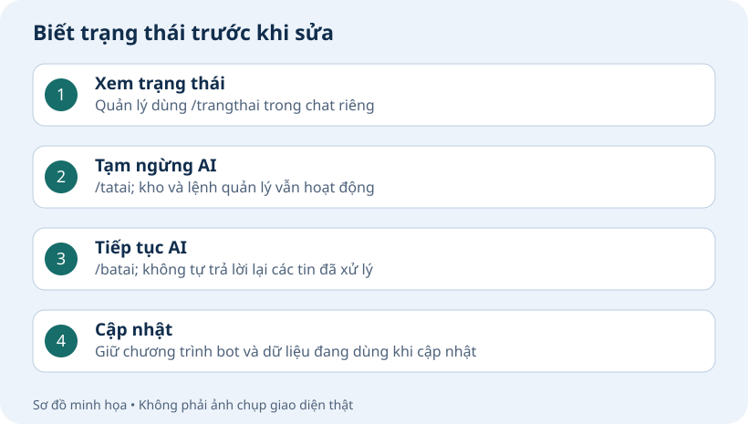
Dấu hiệu đã xong
Bot nhắc đúng hẹn. Bạn tải được file sao lưu, kiểm thấy Bản sao hợp lệ và biết cách khôi phục khi cần.
Nếu chưa đạt, báo tên bước và thông báo lỗi đã che khóa cho AI.
Quản lý và cập nhật bot
Biết xem trạng thái, tắt/bật AI và giữ bộ bot khi cần sửa sau này.
Bài này cho bạn cái gì?
Bạn biết AI đang bật ở đâu, dùng lệnh bật/tắt và biết phần nào đã làm xong.
Kiểm trạng thái vận hành
Dùng tài khoản quản lý gửi /trangthai trong chat riêng để xem AI chat riêng và AI nhóm đang bật hay tắt.
Tắt hoặc bật AI chat riêng: /tatai rieng hoặc /batai rieng. Với tất cả nhóm: /tatai nhom hoặc /batai nhom. Tắt một bên thì bên còn lại giữ nguyên.
Muốn tắt AI cả chat riêng và nhóm, gửi /tatai; bật cả hai gửi /batai. Lịch nhắc, lệnh quản lý và gửi ảnh/link đã nạp vẫn dùng được. Những câu hỏi gửi trong lúc AI đang tắt sẽ không được bot quay lại trả lời sau khi bật AI. Muốn hỏi lại, bạn gửi một tin nhắn mới.
Vào OpenAI Usage chọn đúng Project để xem dùng thực tế; kiểm nhãn Limit enforced để biết đã bật chặn theo hạn mức. Spend alert chỉ cảnh báo; Enforce a hard limit mới bật chặn, có thể vượt nhẹ do độ trễ.
Giữ thư mục bot và file sao lưu cho riêng bạn. Khi cần gửi bộ cài cho người khác, nhờ AI tạo một bản sạch, bỏ khóa, thông tin quản lý và dữ liệu riêng trước khi gửi.
Gửi từng lệnh vào chat riêng với bot khi cần:
/trangthai/tatai rieng/batai rieng/tatai nhom/batai nhom/tatai/bataiDấu hiệu đạt
Bạn xem được trạng thái và biết bật/tắt AI riêng hoặc nhóm.
Đọc KHOI-TAO-BOT.md và tiến độ. Tôi đang làm Bài 10 · Quản lý và cập nhật bot, phần “Kiểm trạng thái vận hành”. Kết quả tôi gặp: [dán câu báo lỗi hoặc mô tả tại đây]. Hãy kiểm nguyên nhân, giữ dữ liệu đang có và chỉ tôi bước cần làm tiếp. Không yêu cầu tôi gửi khóa hoặc mật khẩu.AI tổng kết kết quả và hướng dẫn việc tiếp theo
Đọc KHOI-TAO-BOT.md và tiến độ. Tổng kết Bài 10: bot đã dùng được những gì, còn thiếu gì và sau này muốn sửa hoặc cập nhật thì làm thế nào. Ghi tiến độ và chỉ tôi bước tiếp theo. Không bắt thử lại phần đã đạt. Trả lời ngắn, bằng lời dễ hiểu.Dấu hiệu đạt
AI ghi đúng phần đã đạt, giới hạn còn lại và bước cần làm tiếp.
Đọc KHOI-TAO-BOT.md và tiến độ. Tôi đang làm Bài 10 · Quản lý và cập nhật bot, phần “AI tổng kết kết quả và hướng dẫn việc tiếp theo”. Kết quả tôi gặp: [dán câu báo lỗi hoặc mô tả tại đây]. Hãy kiểm nguyên nhân, giữ dữ liệu đang có và chỉ tôi bước cần làm tiếp. Không yêu cầu tôi gửi khóa hoặc mật khẩu.Dấu hiệu đã xong
Bạn biết AI đang bật ở đâu, dùng lệnh bật/tắt và biết phần nào đã làm xong.
Nếu chưa đạt, báo tên bước và thông báo lỗi đã che khóa cho AI.
Tiếp tục bot đang làm
Mở đúng thư mục bot cũ trong AI bạn đang dùng rồi gửi câu dưới đây.
Đọc KHOI-TAO-BOT.md và tien-do.md trong thư mục bot đang mở. Tôi muốn tiếp tục bot đang làm. Báo ngắn phần đã đạt, phần đang dở và đúng một bước cần làm tiếp. Giữ bot, cấu hình và dữ liệu đang có; không cài lại hoặc thử lại phần đã đạt. Nếu thiếu tiến độ, kiểm trạng thái trước khi kết luận.Sau khi AI trả lời
AI sẽ báo bài và bước còn dở. Chọn bài đó ở cột trái để làm tiếp.
Đã hoàn thành khóa học thì mở Dùng bot hằng ngày.
Dùng bot hằng ngày
Nạp thêm thông tin
Đính kèm file, link hoặc dán nội dung vào AI đang mở thư mục bot, rồi gửi:
Đọc KHOI-TAO-BOT.md và tiến độ. Nạp thêm các thông tin tôi vừa gửi vào bot, giữ nguồn đang có. Hỏi ai được tra cứu nếu còn thiếu. Cho tôi xem thông tin để duyệt trước khi nạp; sau nạp đưa câu hỏi thử kèm các ý trả lời cần đạt.Thêm ảnh hoặc link gửi lại
Kéo ảnh vào AI, chọn file hoặc gửi thư mục/link, rồi nhắn:
Nạp thêm các ảnh/link này vào bot. Gợi ý tên, mô tả và từ khóa; hỏi nơi được gửi nếu còn thiếu, mặc định chat riêng. Cho tôi duyệt danh sách trước khi nạp và giữ các mục đang có.Ảnh/link được duyệt sẽ có đường dẫn công khai để bot gửi lại.
Sửa hoặc ngừng gửi ảnh/link
Gửi cho AI; thay tên ví dụ bằng tên mục của bạn.
Sửa ảnh “Bảng giá”: đổi tên thành “Bảng giá mới” và từ khóa thành “giá mới”. Cho tôi xem thay đổi trước khi áp dụng.Ngừng gửi ảnh “Bảng giá”. Giữ các mục khác và kiểm lại để chắc ảnh này không còn được gửi.Đổi cách bot trả lời
Gửi trong chat riêng với bot. Mở link, sửa rồi xem và áp dụng bản nháp.
/quanly phongcachBật hoặc tắt AI
Quản lý gửi các lệnh này trong chat riêng với bot.
/trangthaiTắt AI chat riêng
/tatai riengBật AI chat riêng
/batai riengTắt AI trong nhóm
/tatai nhomBật AI trong nhóm
/batai nhomCâu hỏi gửi lúc AI tắt sẽ không được trả lời lại sau khi bật. Muốn hỏi lại, gửi tin mới.
Hỏi về file hoặc video
Gửi trong chat riêng với bot, mở link, chọn file và nhập câu hỏi. Kết quả trả về Zalo.
/tepẢnh và tin nhắn thoại có thể gửi trực tiếp vào chat riêng với bot.
Đặt và hủy lịch nhắc
Gửi vào cuộc chat muốn nhận lời nhắc. Ví dụ:
Nhắc tôi sau 10 phút uống nướcXem lịch đang chờ:
/lichnhacVí dụ hủy lịch số 2 trong danh sách:
/huynhac 2Sao lưu hoặc khôi phục
Quản lý gửi trong chat riêng với bot. Tải bản sao với mật khẩu tự giữ. Khi cần phục hồi, chọn file, kiểm rồi làm hai bước trên trang.
/khoiphucMuốn dùng lại bản trước lần phục hồi, xem mục Dùng lại bản đã giữ. Không gửi file sao lưu hoặc mật khẩu cho AI.